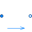

BaseClassesBase classes used in the Sensors package (only of interest to build new component models) |
Package Contents
|
Partial component to model a sensor that measures a potential variable |
|
|
Partial component to model a sensor that measures the difference between two potential variables |
|
|  |
Partial component to model sensors that measure flow properties |